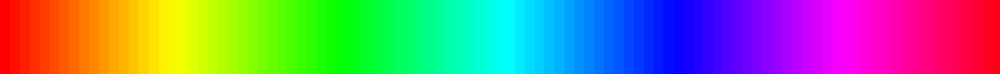

Extracting colorschemes from images
You can extract a colorscheme from an image. For example, here's an image of a famous painting:

Use extract() to create a colorscheme from the original image:
monalisa = extract("monalisa.jpg", 10, 15, 0.01; shrink=2)which in this example creates a 10-color scheme (using 15 iterations and with a tolerance of 0.01; the image can be reduced in size, here by 2, before processing, to save time).

10-element Array{RGB{Float64},1}:
RGB{Float64}(0.0406901,0.0412985,0.0423865),
RGB{Float64}(0.823493,0.611246,0.234261),
RGB{Float64}(0.374688,0.363066,0.182004),
RGB{Float64}(0.262235,0.239368,0.110915),
RGB{Float64}(0.614806,0.428448,0.112495),
RGB{Float64}(0.139384,0.124466,0.0715472),
RGB{Float64}(0.627381,0.597513,0.340734),
RGB{Float64}(0.955276,0.775304,0.37135),
RGB{Float64}(0.497517,0.4913,0.269587),
RGB{Float64}(0.880421,0.851357,0.538013),
RGB{Float64}(0.738879,0.709218,0.441082)](Extracting colorschemes from images requires image importing and exporting abilities. These are platform-specific. On Linux/UNIX, ImageMagick can be used for importing and exporting images. Use QuartzImageIO on macOS.)
ColorSchemeTools.extract — Function.extract(imfile, n=10, i=10, tolerance=0.01; shrink=n)extract() extracts the most common colors from an image from the image file imfile by finding n dominant colors, using i iterations. You can (and probably should) shrink larger images before running this function.
Returns a ColorScheme.
Sorting color schemes
Use sortcolorscheme() to sort a scheme non-destructively in the LUV color space:
using ColorSchemes, ColorSchemeTools, Colors
sortcolorscheme(ColorSchemes.leonardo)
sortcolorscheme(ColorSchemes.leonardo, rev=true)The default is to sort colors by their LUV luminance value, but you could try specifying the :u or :v LUV fields instead (sorting colors is another problem domain not really addressed in this package...):
sortcolorscheme(ColorSchemes.leonardo, :u)ColorSchemeTools.sortcolorscheme — Function.sortcolorscheme(colorscheme::ColorScheme, field; kwargs...)Sort (non-destructively) a colorscheme using a field of the LUV colorspace.
The less than function is lt = (x,y) -> compare_colors(x, y, field).
The default is to sort by the luminance field :l but could be by :u or :v.
Returns a new ColorScheme.
Weighted colorschemes
Sometimes an image is dominated by some colors with others occurring less frequently. For example, there may be much more brown than yellow in a particular image. A colorscheme derived from this image can reflect this. You can extract both a set of colors and a set of numerical values or weights that indicate the proportions of colors in the image.
using Images
cs, wts = extract_weighted_colors("monalisa.jpg", 10, 15, 0.01; shrink=2)The colorscheme is now in cs, and wts holds the various weights of each color:
wts
10-element Array{Float64,1}:
0.0521126446851636
0.20025391828582884
0.08954703056671294
0.09603605342678319
0.09507086696018234
0.119987526821047
0.08042973071297582
0.08863381567908292
0.08599068966285295
0.09193772319937041With the colorscheme and the weights, you can make a colorscheme in which the more common colors take up more space in the scheme:
len = 50
colorscheme_weighted(cs, wts, len)Or in one go:
colorscheme_weighted(extract_weighted_colors("monalisa.jpg")...)Compare the weighted and unweighted versions of schemes extracted from the Hokusai image "The Great Wave":


ColorSchemeTools.extract_weighted_colors — Function.extract_weighted_colors(imfile, n=10, i=10, tolerance=0.01; shrink = 2)Extract colors and weights of the clusters of colors in an image file. Returns a ColorScheme and weights.
Example:
pal, wts = extract_weighted_colors(imfile, n, i, tolerance; shrink = 2)ColorSchemeTools.colorscheme_weighted — Function.colorscheme_weighted(colorscheme, weights, length)Returns a new colorscheme of length length (default 50) where the proportion of each color in colorscheme is represented by the associated weight of each entry.
Examples:
colorscheme_weighted(extract_weighted_colors("hokusai.jpg")...)
colorscheme_weighted(extract_weighted_colors("filename00000001.jpg")..., 500)Linearly-segmented colors
A linearly-segmented color dictionary looks like this:
hsv = Dict(:red => ((0., 1., 1.),
(0.158730, 1.000000, 1.000000),
(0.174603, 0.968750, 0.968750),
(0.333333, 0.031250, 0.031250),
(0.349206, 0.000000, 0.000000),
(0.666667, 0.000000, 0.000000),
(0.682540, 0.031250, 0.031250),
(0.841270, 0.968750, 0.968750),
(0.857143, 1.000000, 1.000000),
(1.0, 1.0, 1.0)),
:green => ((0., 0., 0.),
(0.158730, 0.937500, 0.937500),
(0.174603, 1.000000, 1.000000),
(0.507937, 1.000000, 1.000000),
(0.666667, 0.062500, 0.062500),
(0.682540, 0.000000, 0.000000),
(1.0, 0., 0.)),
:blue => ((0., 0., 0.),
(0.333333, 0.000000, 0.000000),
(0.349206, 0.062500, 0.062500),
(0.507937, 1.000000, 1.000000),
(0.841270, 1.000000, 1.000000),
(0.857143, 0.937500, 0.937500),
(1.0, 0.09375, 0.09375)))The first number in each tuple for each color increases from 0 to 1, the second and third determine the color values. To create a new ColorScheme from this, decide on a sampling rate, then call get_linear_segment_color() and keep the sampled values.
using Colors, ColorSchemes
scheme = RGB[]
for i in 0:0.01:1
push!(scheme, RGB(get_linear_segment_color(_hsv, i)...))
end
ColorScheme(scheme)Make an image from this scheme:
using ColorSchemes, FileIO
img = colorscheme_to_image(ColorScheme(scheme), 450, 60)
save("/tmp/linseg.png", img)
ColorSchemeTools.get_linear_segment_color — Function.get_linear_segment_color(dict, n)Get the color for value n from a dictionary of linear color segments.
For example, suppose you want red to increase from 0 to 1 over the bottom half, green to do the same over the middle half, and blue over the top half. A suitable dictionary would look like this:
cdict = Dict(:red => ((0.0, 0.0, 0.0),
(0.5, 1.0, 1.0),
(1.0, 1.0, 1.0)),
:green => ((0.0, 0.0, 0.0),
(0.25, 0.0, 0.0),
(0.75, 1.0, 1.0),
(1.0, 1.0, 1.0)),
:blue => ((0.0, 0.0, 0.0),
(0.5, 0.0, 0.0),
(1.0, 1.0, 1.0)))Each color is defined by a set of tuples. In each tuple, the first number is x. Colors are linearly interpolated in bands between consecutive values of x; if the first tuple is given by $(Z, A, B)$ and the second tuple by (X, C, D), the color of a point n between Z and X will be given by (n - Z) / (X - Z) * (C - B) + B.
For example, given an entry like this:
:red => ((0.0, 0.0, 0.0),
(0.5, 1.0, 1.0),
(1.0, 1.0, 1.0))and if n = 0.75, we return 1.0; 0.75 is between the second and third segments, but we'd already reached 1.0 (segment 2) when n was 0.5.